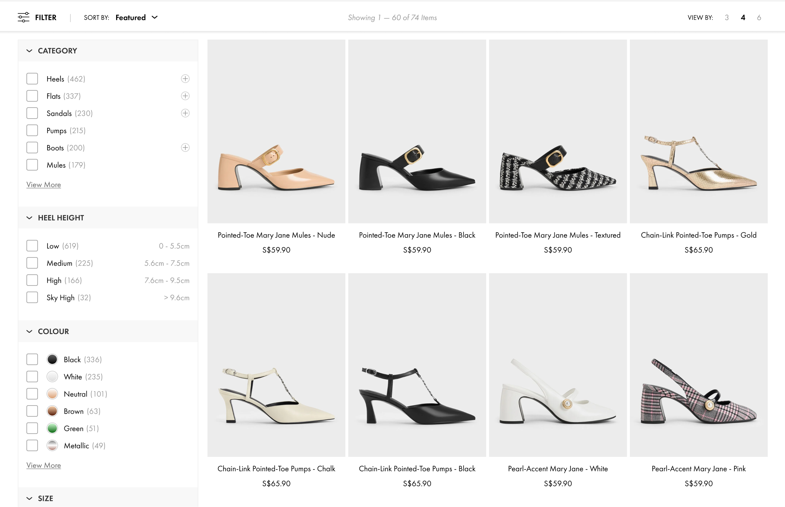
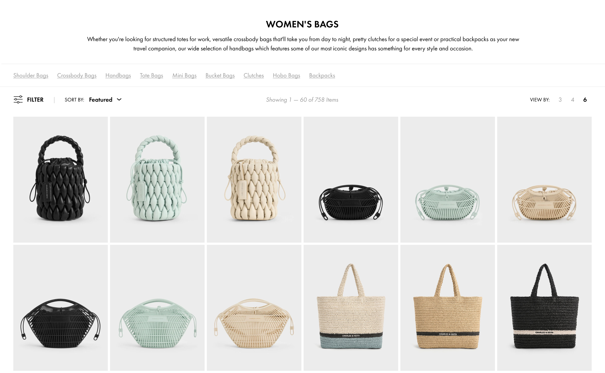

Context
In collaboration with the PR and Marketing team, we launched an incentivized site survey aimed at gathering substantial feedback on our customers' shopping experiences on our website. The survey identified the Product Listing Page (PLP) as the top area customers wanted to see improved.
They highlighted significant issues with the PLP's filter function and reported that products displayed often did not match their selected filter criteria. Additionally, there was a clear demand for a broader range of filtering options to enhance their browsing experience.
With this feedback in mind, our team decided to overhaul the PLP, focusing on improving its usability and design.
Quantitative Data
Heatmap Analysis
Our heatmap analysis revealed heavy use of the “Filter,” “Sort,” and “View by 4” features, highlighting users' preference for quick browsing and targeted searches.
-
Key Insight: Users prioritize tools that allow for efficient navigation and narrowing down of options.
Revenue Impact
Sessions involving filter interactions contributed to approximately 22.5% of revenue.
-
Key Insight: Users who engage with filters are significantly more likely to make a purchase, underscoring the importance of robust filtering options.
User Testing
We conducted unmoderated user testing to observe browsing behaviors and identify pain points not captured by the site survey.
Findings:
-
Users aim to browse quickly.
-
Issues included filter accuracy, a need for more filtering options
-
Slow loading speeds
-
Preference for infinite scroll over pagination
-
Back button returns user to the top of the PLP instead of their previous position.
Competitor Analysis
To ensure our solution met industry standards and practices, we conducted a competitor analysis of high-affinity brands.
Findings:
-
Effective strategies for displaying subcategory links and potential filter options.
-
How increasing the number of columns in our PLP could enhance speed browsing.
Heuristic Findings
We referred to Nielsen Norman Group's guidelines to gather additional insights.
Notable Recommendations:
-
Provide large, consistent product images on listing pages to improve the browsing experience.
-
Offer multiple views of product images via hover or a clickable carousel, allowing users to better understand products before purchase.
-
Use slide indicators for swipe-activated content on mobile devices to simplify navigation through multiple product images.

Improve Filter and Sort By
-
Sticky Filter and Sort By: Based on extensive research, we recognized the critical role that filters and sorting options play in enhancing the user experience. To ensure easy access to these tools, we introduced a sticky menu bar that follows users as they scroll down the page. This design keeps the filter and sort options readily available, making it convenient for users to refine their search criteria at any point during their browsing.
-
Expanded Filter: To provide greater flexibility, we added the option for users to collapse the filter section after use. This feature allows for a cleaner and more spacious browsing experience when the filters are not needed, improving the overall usability and aesthetic of the product listing page.
-
Better Filter Logic: We have significantly improved the backend logic of our filtering system to ensure more accurate results. This enhancement addresses a key issue highlighted by many users, leading to a more reliable and satisfying browsing experience. Users can now trust that the filters will yield precise and relevant product listings, streamlining their search process.

Optimizing for Speed Browsing
-
Expanded View Grid: In response to users' preference for quick browsing, we have introduced a "View By 6" option on our PLP. This feature allows users to see six products at a time, enhancing browsing speed while adding a touch of magazine-like aesthetics. This enriched visual presentation improves the overall user experience by making product exploration more engaging and efficient.
-
Seamless Scrolling: We have implemented seamless scrolling, where products load automatically as users scroll down the page. This eliminates the need for manual loading and allows for a smooth, uninterrupted browsing experience. Users can now effortlessly browse through a continuous stream of products without additional interaction, making the shopping experience more fluid and enjoyable.
-
Improved Logic: Our development team has optimized loading speeds and navigation to ensure a more efficient user experience. Enhancements include maintaining the user's position on the page when navigating back, which prevents the frustration of losing one's place during browsing. These improvements contribute to a smoother, more responsive interaction with our site, ensuring users can quickly and easily find what they are looking for.
✨Conclusion✨
The revamp of our PLP has significantly enhanced the browsing experience, resulting in increased user engagement and satisfaction. This major overhaul, our first of its kind, has provided valuable insights and established effective processes for future redesigns. The success of this project paves the way for more comprehensive improvements across our site, setting a strong foundation for continued innovation and excellence in user experience.